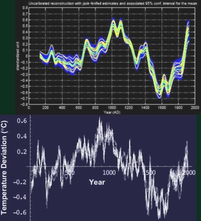

Voici l’historique résumé de cette affaire de réchauffement climatique qui fait la une des médias et mobilise les discours de nos hommes politiques qui battent leur coulpe en affirmant que l’homme en est le seul responsable... Cet exemple parfait de “Pensée Unique”, martelée jours après jours, en est arrivé au point que plus personne ne met en doute la véracité de ce qui nous est affirmé. Jusqu’à établir des bilans chiffrés de cette catastrophe écologique “si nous ne faisons rien” qui se montent jusqu’à des milliers de milliards (comme en 1970 où on prévoyait un nouvel âge glaciaire) ! (Rapport de Sir Stern, UK). Alors que nous ignorons encore quelle va être l’amplitude de la variation de la température et de la montée des eaux (à des facteurs 10 près.), s’il y en a une significative. Bref, comme on le voit, la Pensée Unique se déchaîne.
Cette page est désormais obsolète et n'est plus mise à jour depuis la fin 2007. Vous trouverez des explications beaucoup plus détaillées et actualisées dans la rubrique : le réchauffement climatique sous la loupe. On y compare les deux théories et leurs méthodologies (gaz à effets de serre et effets des éruptions solaires).De même, les pages "océans et glaciers" et "refroidissement" sont des prolongements constamment réactualisés de cette page. |
En 1988 a été créé, avec les soutien actif des américains, le GIEC (IPCC en anglais), le Groupe Intergouvernemental d’Experts pour l'Etude du Climat. Initialement créé sans à priori scientifique, il évolue rapidement sous l'influence de James Hansen et recentre ses efforts sur les conséquences possibles des rejets de gaz carbonique CO2 anthropique (résultant de l’activité humaine) sur l’évolution du climat. Cet organisme, qui impliquait de nombreux et éminents scientifiques, tenait jusqu’en 1995 des propos très mesurés. Les choses ont évolué depuis lors. Les politiques ont pris le dessus. Restent, en tant que scientifiques, des experts en botanique, économie, sociologie, biologie, environnement et autres sciences s’intéressant aux conséquences d’un réchauffement climatique. Par contre, les climatologues de renom y sont devenus minoritaires et plusieurs d’entre eux (Richard Lindzen et Christopher Landsea (lire sa lettre), Pielke, Christy et Rieter par exemple) en ont démissionné au motif “que le processus est motivé par des objectifs préconçus et qu’il est scientifiquement non fondé”. Inquiétant pour le GIEC, non ? (Pour en savoir plus sur le GIEC allez ici).D'autant plus que les événements qui ont précédé ces démissions de climatologistes compétents laissent rêveur. En voici une histoire résumée mais certifiée exacte :
Le GIEC (IPCC) rédige périodiquement un rapport résumé destiné aux politiques. Ce rapport est intitulé "Summary for policymakers". Deux phrases clefs (pour les scientifiques du GIEC) ont été délibérément supprimées, au tout dernier moment, du " résumé pour les politiques" qui est sorti en 1996. ces deux phrases sont significatives d'une part de l'honnêteté et de la retenue des climatologues du GIEC (de l'époque) dans cette matière de réchauffement climatique et d'autre part de la volonté politique de quelques uns (dont le président lui-même) de dramatiser les conclusions de ce rapport. Voici ce deux phrases retirées du rapport final. :
Les hommes et le climat depuis le haut moyen-âge...
Quelques éléments de réflexion :
Ci-contre la courbe des températures du globe (ici) de l’an 900 à nos jours, généralement admise, telle qu’elle a été publiée par le GIEC en 1995. Cette courbe est dite "courbe de Lamb" du nom du fondateur et premier directeur du CRU, le "Climate research Unit" de l'Université d'East Anglia (UK). Cette courbe était basés sur un grand nombre d'observations historiques. On y observe :
-Un “optimum” médiéval, de 350 ans autour de l’an 1100 (environ +6°F) qui a recouvert toute la planète (prouvé par de multiples mesures). A cette époque, le Groenland était terre d’immigration (des vikings, notamment). On recherchait des curés pour évangéliser, on y construisait des églises et on y cultivait etc...La hausse du niveau de la mer de l’époque est estimée à quelques 25cm. De nos jours, le Groenland est redevenu un énorme bloc de glace qui fond peu à peu sur son pourtour et s'épaissit au centre...
- Une période très froide appelée “petit âge glaciaire”, vers 1650. Par exemple, la Tamise était gelée chaque année au point que s’y établissaient des foires et autres activités commerciales. La vigne disparut d’angleterre et le Groenland fut déserté.
En 2006, la température de la planète est encore bien inférieure à celle de la période chaude médiévale contrairement aux affirmations de certains (voir en bas ). Bref, la température du globe a considérablement varié au cours des âges et sans aucun doute sous l'effet de causes naturelles.
A titre d'exemple, voici ce que disait en 1595,
John King, un prédicateur Elizabethain :
"Notre époque est le monde à l'envers
Nos étés sont sans été,
Nos récoltes sont sans récoltes."
Ci-contre, la fameuse courbe en “crosse de hockey” publiée par Michael Mann en 1998 qui contredit carrément la courbe précédente, telle qu'elle a été publiée (jusqu'à 5 fois dans le même rapport) par le GIEC en 1999. . Depuis, cette courbe est devenu une “star” des médias américains. Très décriée et même délaissée de nos jours (voir ci-dessous), cette courbe a été obtenue, en particulier, par dendrochronologie (mesure des cernes des arbres). Ces résultats ont été repris par d'autres scientifiques qui les ont étudiés en détail et ont conclu à une falsification des données et à des traitements informatiques erronés. Au contraire de la courbe précédente, la courbe de Mann indique une température légèrement décroissante de l’an 1000 jusque vers 1900 puis une montée très brutale jusqu’à nos jours.
Cette courbe ne détecte ni l’optimum médiéval, ni le petit âge glaciaire, tout deux pourtant confirmés par de très nombreuses autres indications indépendantes entre elles. C’est inquiétant.
Cette courbe qui contredit pourtant gravement la courbe précédente (publiée par le GIEC) et qui a été rejetée par des comités d'experts indépendants a servi d’argument N°1 pour tous les rapports du GIEC jusqu’au dernier rapport de février 2007 où elle est (heureusement) tronquée pour ne conserver que la partie ascendante à partir de 1960.
Addendum du 27 juin 2008 : On vient de démontrer que l'hypothèse de base de la dendrochronologie est fausse : Pour favoriser la photosynthèse, les arbres font varier leur température qui est donc, le plus souvent, différente de cette de l'air ambiant....Voir ici pour plus de détails.
Ci contre, la courbe, à la même échelle de temps que la précédente, qui montre l’évolution de la proportion de CO2 dans l’atmosphère. Nous sommes passés de 280ppm (parties par million) à 384 ppm de nos jours (+30%) disent-ils. Même cela est remis en question par des publications récentes...(voir ici).
La corrélation supposée entre la “crosse de hockey” et la concentration de CO2 ( ci-contre) sert de base à tous ceux qui interprètent le “réchauffement climatique” comme une conséquence de l’activité humaine, comme le GIEC. Pourtant, le C02 ( 0,037% en volume de l’atmosphère) n’intervient qu’assez peu dans l’effet de serre, la grande majorité (entre 60% et 95%, selon les auteurs) venant de l’eau et des nuages qui sont sujets à une très grande variabilité. D’autre part, il n’y avait aucune activité industrielle digne de ce nom en l’an 1100. Alors comment les tenants de l'effet de serre expliquent-ils l’optimum médiéval et aussi le petit âge glaciaire ? Ils ne l'expliquent pas. Pourtant, l'existence de ces périodes chaudes et froides ne fait aucun doute pour les historiens et (presque) tous les scientifiques. Certains persistent encore à affirmer que l'optimum médiéval n'a affecté que l'atlantique nord alors que les paléoclimatologues en ont retrouvé des traces évidentes en australie, au japon, en russie etc...bref dans le monde entier. Il reste que les efforts du GIEC depuis sa création jusqu'à nos jours, portent exclusivement sur l'influence possible de l'effet de serre du CO2, ce qui pose un problème grave aux sceptiques car le principal gaz à effet de serre, et de loin, est la vapeur d'eau (H2O). Il est vrai qu'il est très difficile voire impossible de modéliser les effets du principal gaz à effet de serre, H2O. Et, de fait, on ne peut s'empêcher de penser que les conséquences d'une petite fluctuation de la quantité de vapeur d'eau dans l'atmosphère ou d'un élargissement minime de la couche nuageuse peuvent ainsi dépasser, et de beaucoup, l'effet de serre du CO2. C'est d'ailleurs sur l'effet de la vapeur d'eau et des nuages que portent les efforts de ceux qui cherchent une alternative à l'explication exclusive que donne le GIEC sur le léger réchauffement climatique actuel (moins de 1°C en cent ans). Vous trouverez une comparaison des deux théories en présence, ici.
Cette courbe est aussi très sérieusement remise en question par des travaux très récents selon lesquels la concentration en CO2 aurait connu d'importantes variations et des maxima ( 440 ppm) bien supérieurs aux valeurs actuelles (384 ppm) pendant les deux derniers siècles ce qui contredit gravement les données publiées par le GIEC. Allez voir la page "courbes" pour en savoir beaucoup plus à ce sujet.
La courbe ci-contre donne une réponse plausible au réchauffement actuel mais elle est niée par le GIEC qui a centré tous ses efforts sur l'effet de serre du CO2. Elle représente l’activité du rayonnement solaire depuis 1600. Les éruptions solaires se reproduisent tous les onze ans (cycle de Schwabe). On les distingue très bien comme une suite de pics sur la courbe. On observe deux choses importantes :
Le petit âge glaciaire est parfaitement expliqué par une baisse marquée du rayonnement et des éruptions solaires (le soleil ne “respirait plus”. C'est le minimum de Maunder) pendant cette période. Le GIEC affirme que les variations de luminance du soleil sont impuissantes à explique le réchauffement actuel. Cependant, il existe d'autres explications basées sur la durée des cycles solaires autrement dit sur le éruptions solaires tout aussi délaissées par le GIEC. A noter que des mesures faites sur des fossiles et des marges océaniques montrent que les éruptions solaires explique aussi l’optimum médiéval. Tout cela est en débat actuellement même si le GIEC persiste à le nier. On observe que l’intensité des éruptions solaires augmente graduellement jusqu’à notre époque où elle est maximale. Alors pourquoi écarter d’emblée une explication qui sert à expliquer le petit âge glaciaire et l’optimum médiéval, pour ce qui se passe aujourd’hui ? Sans compter, d’autres explications convergentes qui ne manquent pas de solides arguments et qui sont soutenues par d’éminents climatologues, par exemple l’absence d’éruptions volcaniques récentes qui tirent les températures vers le bas comme le Pinatubo.
Au grand dam des tenants de l'effet de serre (très influents au sein du GIEC) l'activité éruptive solaire comme cause possible du présent réchauffement climatique, a fait l'objet d'études approfondies. Des résultats très convaincants ont été obtenus. Vous en trouverez une brève description ici et une beaucoup plus approfondie ici.
Voici quelques éléments de lecture et de réflexion pour alimenter la débat.
Car il existe un vrai débat sur ces questions, contrairement à ce qu’affirme la Pensée Unique.
Les Pour :
Vous n’aurez aucun mal à trouver sur le WEB des études extensives dans le droit fil de la pensée ambiante (et pour cause. le nombre de publications croit exponentiellement), mais en voici deux ou trois :
Un site assez pédagogique mais plutôt véhément et sûr de lui, venant d’un indépendant, dans la droite ligne de la Pensée Unique en la matière, Jean-Marc Jancovici , (lequel fait partie du premier cercle de Nicolas Hulot, entre autres)
Les sites alarmistes, à la Al Gore, abondent, tel celui-ci. Pour vous faire peur, certains vont même jusqu'à publier des cartes informatisées (applets) qui vous montrent comment les terres seront (!) immergées lorsque le niveau des mers aura monté de 10m, 50m, 100m. Brr.!
Manque de chance pour les génies qui ont fabriqué ces gadgets : c'est peu probable. En effet, même les derniers chiffres du GIEC en rabattent : ils avaient prévu une montée des eaux de 34 pouces dans leur rapport précédent. Ils prévoient maintenant 17 pouces (42 cm) en 100 ans.On a le temps de construire des polders comme en Hollande.
Les Contre :
Plus difficiles à trouver... et pour cause aussi.
Un site de référence en français, bien connu de tous les sceptiques : Climat Sceptique
Un forum fréquenté par des gens compétents : Skyfal
Allez visiter la pages des liens pour trouver une liste que je mets à jour au fur et à mesure de mes trouvailles.
En voici un autre relatif au célèbre épisode de Claude Allègre, dans le site Jancovici (lequel commente violemment l’article d’Allègre paru dans le Monde). Mais il est vrai qu’Allègre n’est pas un climatologue, tout comme moi-même. Alors, voyons les climatologues patentés.
Des Canadiens et des anglais (tous des scientifiques climatologues) ont créés deux sites particulièrement bien documentés. Le site Canadien (appelé "Friends of Science", les amis de la science), en particulier, s'appuie sur les résultats les plus récents en matière de climatologie. Il est constamment réactualisé. Si vous êtes Anglophone, je vous en recommande la lecture. Il renvoie d'ailleurs aux articles des opposants à la Pensée Unique du Royaume Uni. On y trouve des petits films vidéo qui vous expliquent tout ce que les "contre" pensent des conclusions du fameux GIEC (IPCC en anglais). C'est Al Gore, mais à l'envers. Vous pouvez aussi trouver des sites pertinents à la rubrique "liens" de ce site
Pour ce qui est des sites francophones, je vous recommande, en particulier, les articles très bien documentés de deux spécialistes reconnus de la climatologie, publiés dans la revue Fusion (section Climatologie) . L’un de John Daly (journaliste scientifique) et l’autre de Marcel Leroux , (directeur du laboratoire mixte CNRS-Université “Climatologie, Risques, Environnement”, climatologue éminent et auteur de nombreux livres en anglais sur ces sujets). Le premier (Daly) est intitulé “Falsification de l’histoire climatique pour “prouver” les réchauffement global” et le second (Leroux) “Réchauffement global : une imposture scientifique”. C’est tout dire. Inutile de vous dire que Marcel Leroux est peu apprécié de Météo-France et de l'Institut Pierre Simon Laplace (successivement spécialiste du "trou de l"ozone" et du "réchauffement climatique"). La méthode utilisée par Michael Mann (la dendrochronologie) y est abondamment critiquée et se résultats opposés à ceux obtenus par de multiples autres techniques en divers points du globe. On y reproche, en particulier, à la dendrochronolgie de ne pas voir les océans (75%de la planète; bien sûr, il n’y a pas d’arbres, non plus que dans les déserts), de laisser penser que le seul paramètre qui contrôle la croissance des arbres est la température, alors que le taux d’humidité et la proportion de CO2 est un facteur essentiel. "La température n’est pas le moteur de la photosynthèse et les températures nocturnes ont une influence sur la transpiration" (selon un lecteur attentif). Les cernes des arbres sont influencés par de nombreux autres facteurs que la température, comme l’ensoleillement, le taux de CO2 (mais oui, ça se mord la queue.), les insectes nuisibles, la promiscuité, les feux de forêt, le gel et l’enneigement etc...
Tant qu’à vouloir étudier les végétaux, il vaut mieux utiliser la phénologie (c’est la science qui étudie l’influence des données climatiques sur la croissance des plantes, comme la vigne sur laquelle on possède des données fort détaillées). C’est d’ailleurs qu’a fait, in extenso et avec d’autres méthodes, Emmanuel Le Roy Ladurie de l’Ecole Normale Supérieure. Il a publié un excellent et très rigoureux ouvrage (en deux tomes) “ Histoire du climat depuis l’an mil”, Flammarion, Paris, 2000) dont je vous recommande la lecture attentive, bien quelle soit un peu ardue. On y parle abondamment du petit âge glaciaire et de l’optimum médiéval qu’ignore la fameuse “crosse de hockey”. Les éruptions volcaniques et la pollution par les poussières sont un autre facteur très important pour faire évoluer la température du globe. Les émissions de gaz et de poussières plus ou moins délétères induisent un abaissement très net des températures en certaines parties de la surface du globe, en atténuant l’ensoleillement. Or, font remarquer les opposants à la thèse ambiante, il n’y a pas eu d’explosion de volcan notable dans la dernière décennie, ce qui est assez inhabituel, alors qu’il y en a eu une quinzaine depuis 1900 dont le célèbre Pinatubo (12 juin 1991)...
Vous aurez accès à une présentation Power-point en français qui fait le point sur les mythes et les réalités sur le réchauffement climatique en cliquant ici.
Si vous êtes anglophone, vous pouvez lire aussi ceci sur le soit-disant consensus entre les scientifiques.
Et voici encore un pavé dans la mare des tenants de l’effet de serre, parmi d’autres. (Vous voyez que tout le monde n’est pas d’accord.)
Enfin, allez voir la page des liens que je remets à jour régulièrement.
Des réactions au rapport Stern :
Suite au dramatique plaidoyer filmé de Al Gore (”Une vérité qui dérange”) et au rapport de Sir Stern (UK) qui prévoit un cataclysme économique et humain qui se chiffrerait en 5,5 mille milliards d’Euros (entre nous, comment a t’il fait pour chiffrer le coût d’une catastrophe dont on est encore loin d’évaluer les effets réels, même pour ceux qui y croient ?). Il semble, qu’à l’inverse, la prudence ait prévalu dans l’esprit du public anglais qui s’est exprimé dans les commentaires sur le site de la BBC, suite à la parution de ce rapport. Voici, en substance, le résultat de l’analyse des journalistes de la BBC :
Les auditeurs et lecteurs qui écrivent ou téléphonent à la BBC expriment, en très grande majorité, leur scepticisme : “Ce monsieur est économiste pas scientifique. Pourquoi les anglais devraient-ils payer quand les autres ne font rien ? Il vaudrait mieux utiliser l’argent pour des causes utiles et avérées plutôt que pour cette prévision qui n’a rien de certain” etc.
Dans cet esprit, un scientifique anglais exprime le pensée populaire. C’est Martin Livermore, directeur de Scientific Alliance. Je cite :
“Evidence is building that climate is not driven primarily by human use of fossil fuels, as most people have been led to believe.
There have been significant temperature changes during the last millennium, well before industrialisation.
And the major influence of fluctuations in cosmic rays from the sun have been under-represented in the work of the Intergovernmental Panel on Climate Change (IPCC). (Note de l’auteur du blog : IPCC, c’est le GIEC en anglais)
The billions which this review says it is necessary to spend are likely to have little positive effect, and could be put to much better use in helping the world's poorest people to create better lives for themselves. “
NDLR...Sur l’influence des éruptions solaires, il rejoint les conclusions de Daly, de Svensmark, de Shaviv et de milliers d'autres.
Toujours en angleterre, un professeur de l’Université du Surrey s’exprime à la télévision, dans le même sens. (Bravo pour l’impartialité, la... BBC.). De nombreuses autres publications dont le sérieux n’est pas contestable, mettent en doute la Pensée Unique en matière de réchauffement climatique. Celles-ci, par exemple.
Conclusion : Rien n’est certain, démontré, assuré. Mais la lecture des articles de “contras”, par opposition à ceux de nombreux “pros” (aussi véhéments soient-ils) me semble soulever des questions épineuses pour le GIEC, du strict point de vue scientifique. Pour le moins, ils jettent un doute sérieux sur la Pensée Unique.
Résumons nous : Qu’il y ait un réchauffement climatique du moins dans certaines régions, très peu en doutent bien que les mesures satellitaires et d’autres disent le contraire. Que la proportion de CO2 se soit récemment accrue dans l’atmosphère, personne n’en doute, non plus. Par contre que cette dernière résulte de l'activité humaine et soit la cause du réchauffement, ce n’est pas certain et en tout cas, c’est loin d’être admis par tout le monde, comme on veut nous le faire croire. De nombreux climatologues pensent que cette augmentation du CO2 est une conséquence du léger réchauffement des océans et non pas une cause. D'autre part, quand un responsable d’un célèbre Institut spécialisé (IPSL) nous déclare, à l’appui de ses affirmations, que 99% des membres de son Institut adhèrent à la Pensée Unique, cela ne me convainc pas du tout parce que je sais très bien qu’il est impossible à quiconque de poursuivre des recherches dans un sens contraire à la pensée ambiante dans un tel laboratoire : Ceux qui ont des doutes se taisent ou s’en vont.
En effet, la thèse ambiante soutenue par le GIEC souffre d’une grande faiblesse : A ma connaissance, personne n’a encore pu démontrer scientifiquement et surtout chiffrer la relation exacte qui existe entre l’augmentation de la proportion de CO2 produite par l'homme et la température du globe et même si cette température globale a un sens. De même, on est encore incapable d'évaluer l’effet de rétroaction de l'augmentation du CO2 sur la biosphère terrestre : (plus de CO2 = plus de végétation sur terre =? plus d’absorption de CO2 ?), non plus que sur les océans. (Pour en savoir un peu plus cliquez ici) . Bref, on ne peut presque rien chiffrer sérieusement. La conviction repose sur la corrélation supposée de courbes comme celles des Figure 2 et 3 précédentes et sur des simulations théoriques sujettes à caution. Malheureusement pour les tenants de cette corrélation, il existe aussi des anti-corrélations (c’est à dire que la température a stagné ou même baissé quand la teneur en CO2 a augmenté. En outre, les experts du climat, actuellement très actifs sur le réchauffement climatique, nous avaient promis, en 1970, un petit âge glaciaire pour les décennies à venir, c’est à dire pour maintenant et qu'il n'est rien venu. l'aurions nous oublié ?). D’autre part, les scientifiques disent “Corrélation n’est pas raison” et un de mes collègues ajoute, amusé, “ Ce n’est pas parce que le taux de population en Allemagne a diminué en même temps que le nombre des cigognes, que ce sont les cigognes qui apportent les bébés.”
Et je ne parle pas des nombreuse simulations numériques qui prédisent l’apocalypse (voir, par exemple les courbes des futures températures “calculées ” ici) . Pendant 30 ans, j’ai suffisamment comparé les résultats de nombreuses prévisions numériques avec la réalité expérimentale pour savoir qu’il faut être très, très, très méfiant à ce sujet. Mais pour être juste, je dois dire que j’en aie vues qui, parfois, reflétaient la réalité. Mais, elles étaient très rares. Quant aux autres...Elles en ont prédit de bien bonnes dans un passé récent. (voir le bêtisier).
En réalité, et pour simplifier, nous assistons actuellement à une confrontation entre deux théories :
Tout serait pour le mieux si la confrontation entre ces différentes théories ( voir : le réchauffement sous la loupe) restait sur un plan strictement scientifique. La connaissance du climat y gagnerait beaucoup...
Malheureusement, l'aveuglement de la passion et les intérêts économiques ou politiques s'en sont mêlés : Les arguments volent très bas et certains proposent même de bâillonner (voire d'inculper) ceux qui ne sont pas d'accord avec la théorie de l'effet de serre. C'est pour bientôt le grand retour de l'Inquisition ?
Pour en savoir beaucoup plus sur cette confrontation entre les théories sur le réchauffement climatique, cliquez ici.
_________________________________________________________________________________________________
Addendum du 16 août 2008 : Un excellent historique de cette sombre affaire de crosse de hockey, vue avec un recul de 10 ans, se trouve ici (en anglais)
En 2003, deux chercheurs (sérieux) canadiens, Ross McKitrick de la Guelph University et l’analyste Steve McIntyre de Toronto ont repris les données utilisées par Michael Mann pour recalculer la courbe des températures de la fameuse crosse de hockey. Leur résultats sont notablement différents de ceux produits par Michael Mann qui sont toujours utilisés par le GIEC : Les voici :
De 1400 à 1980. Cette courbe corrigée ne montre toujours pas le petit âge glaciaire (vers 1700) mais montre que le climat vers 1400 (la fin de l’optimum médiéval) était bien plus chaud qu’aujourd’hui. C’est très différent de ce que produit la crosse de hockey. Les travaux de Mann, de McIntyre et McKitrick ainsi que de beaucoup d'autres ont fait l’objet, en 2006, d’une scrutation approfondie et d'un rapport très détaillé, rédigé par des scientifiques indépendants et compétents (”adhoc committee report on the hockey stick climate reconstruction” ) . Ce rapport (91 pages) soutient les résultats de McIntyre et McKitrick et met en évidence les graves erreurs tendancieuses ( pour ne pas dire plus) de la méthodologie de Mann. Le GIEC, semble t’il, ne veut pas entendre parler de ces tout nouveaux résultats. La presse n’en a pas parlé et la Pensée Unique persiste... Bizarre, vous ne trouvez pas ? Cela risque de démobiliser ?
La courbe en crosse de hockey qui sert d'argument de base au groupe d'experts de l'ONU (le fameux GIEC) pour alarmer l'opinion internationale, résulte manifestement d'une utilisation erronée des outils statistiques. Pour ne pas dire plus. Vous en voulez une illustration frappante ?
Ci-dessous sont représentées quatre courbes qui résultent de la "méthode" statistique utilisée par Mann pour générer sa célèbre crosse de hockey (référence : le rapport Wegman). Une seule de ces courbes a été publié dans l'article de Mann. Mais savez-vous comment on été obtenues les trois autres courbes qui donnent, elles aussi, des courbes en forme de crosses de hockey ?
...En introduisant dans le programme des données aléatoires autocorrélées.
.... Autrement dit, le programme informatique de Mann donne toujours la même forme de courbe, quelques soient les données introduites. Il y a comme un défaut. Comme vous vous en doutez, cela jette un doute sérieux sur les arguments de base du GIEC pour affirmer que l'homme était responsable du réchauffement climatique. La controverse fait rage parce que les partisans des thèses du GIEC n'en sont pas restés là, évidemment. Bref : A suivre.
Alors, on peut se poser (au moins) quelques questions :
Pourquoi ce débat très vivant entre personnalités scientifiques avisées est il systématiquement caché au public, écranté par le GIEC, par les médias et par les politiques qui, pour la plupart, et à l'exception du président de la république Tchèque, suivent le “mainstream” sans barguigner ? Pourquoi nos médias nationaux, nos journaux n'évoquent-ils jamais les doutes d'une partie importante de la communauté scientifique ? Pourquoi la quasi totalité des intervenants écologistes ou autres politiques (comme Schwartzenegger en Califormie) nous parlent de cette histoire de réchauffement climatique comme si les faits étaient réellement scientifiquement prouvés, alors que c'est plutôt le contraire ? Pourquoi a t'on converti des affirmations douteuses en certitude incontestable ? Pourquoi imposer la Pensée Unique dans ce domaine plus que contestable et contesté ?
Pourquoi la récente intervention de Claude Allègre qui éprouve des doutes sur la responsabilité humaine en matière de réchauffement climatique, a t’elle déclenché une telle tempête haineuse et sans précédent (récent) dans l’histoire des débats scientifiques. On se croirait revenu au moyen âge. Alors quoi ? On n’a plus droit à la contestation en matière de science ? Qu’est devenue la déontologie des scientifiques ?
Hélas, je crains bien que cela tienne aux mécanismes destructeurs et pernicieux que j’évoque dans la section “Pourquoi ce site ?”.
Lisez cette section, si ce n’est déjà fait.
Mais rassurez vous, ami(e) lecteur (trice), la Vérité finira bien par triompher. Top ou tard. Pensez à Galilée!
A propos de développements récents de cette affaire, lisez aussi les derniers résultats sur les ouragans et sur le niveau des océans ainsi que les dernières avancées en matière de réchauffement par d'autres causes que le CO2, qui démentent une grande partie des délires que l'on vous fait avaler tous les jours au nom de l'écologie... et des intérêts financiers de certains.
Petit à petit, la Vérité sortira du puits.
PS : En avant première: La Vérité sort (un peu) du puits : L'ONU (C'est à dire le GIEC) en rabat dans son dernier rapport ( contrairement à ce qu'affirment les médias) qui est sorti en février 07. Les océans devraient monter deux fois moins que prévu (42 cm au lieu de 84 cm en 100 ans). La fourchette des variations de températures se rétrécit.Tiens, tiens. Ils auraient donc finis par lire et comprendre une partie des derniers résultats des recherches sur la non-disparition des planctons, le niveau des océans, l'effet des éruptions solaires ?
Voici, enfin, deux "reconstructions" de la température du millénaire passé, obtenues par deux auteurs distincts (tirées d'ici) . Il y en d'autres du même genre. Avouez que ces deux courbes, obtenues, l'une en 2005 (courbe du haut) et l'autre en 2007 (courbe du bas) se ressemblent étrangement et qu'elles n'ont rien à voir avec la courbe en crosse de Hockey de Mann pourtant si prisée dans les rapports successifs du GIEC au point d'y figurer plusieurs fois dans le même document...
La courbe du haut est due à Moberg (2005) On y voit très bien le petit âge glaciaire et l'optimum médiéval.
La courbe du bas, plus récente, est due à Craig Loehle (document ici). Publiée en 2007, elle reproduit correctement ce que tout le monde sait, c'est à dire l'existence nette d'un optimum médiéval (800-1200) et d'un petit âge glaciaire (entre 1400 et 1800).
Les deux courbes diffèrent cependant dans les températures du vingtième siècle, ce qui laisse la porte ouverte à toutes les supputations concernant le fait qu'il a fait plus chaud ou moins chaud en 1998 (qui est le pic actuel de température) qu'au moyen-âge.Mais cela n'est pas très important ni définitif du fait de la grande imprécision qui règne dans ce genre de reconstructions. Pour la période récente, on dispose de thermomètres.
Ce qu'il faut y voir ( à mon avis) c'est que les reconstructions convergent des deux côtés de la barrière. En effet, Moberg est réputé comme un climatologue "mainstream" c'est à dire du côté des tenants de l'effet de serre tandis que Loehle est réputé "sceptique" ou "rationaliste", comme on voudra. Il est probable que la vérité doit se situer dans une image proche de ces deux courbes. D'autant plus qu'elles reproduisent assez exactement d'autres recontructions telles que celles obtenues par des méthodes totalement différentes comme celles de la mer des Sargasses (que vous trouverez ici).
Nous progressons, mais du coup, le GIEC ne fait plus mention d'aucune de ces courbes dans ses derniers rapport.
Comme c'est
bizarre.
Alors, la crosse de Hockey de Michael Mann... Bof.
Et enfin, pour terminer sur une note gaie : Voici la meilleure, la plus véridique, la plus honnête des courbes de température.
Où peut-on la trouver ?
A la télévision, bien sûr. Sur TF1, la chaîne qui a été choisie pour "le mieux disant culturel" lors de sa vente par l'Etat à l'entreprise Bouyghes..
Voici ce TF1 a montré au Journal Télévisé du 28 Juillet 2006 :
Ils ne doivent pas trop piocher dans la littérature scientifique, les journalistes de TF1, car la crosse de hockey date de 1998 et, depuis, sont parues de nombreuses courbes montrant l'optimum médiéval et le petit âge glaciaire comme ci-dessus....D'autre part, on ne voit pas comment se termine la courbe après l'an 2000. D'autre part, si on extrapole l'échelle des années en abscisse sur la courbe de TF1, on trouve qu'en 2100, la température aura monté de +0,6°C, si je lis bien. Le 2003 semble bizarrement placé. Bravo TF1. ça c'est du mieux-disant culturel.
Pour en savoir beaucoup plus sur les théories en présence ... cliquez ici.
Pour en savoir beaucoup plus sur les objections sérieuses contre les courbes (CO2 et température) publiées par le GIEC, cliquez ici.
mis à jour le 26/12/2007